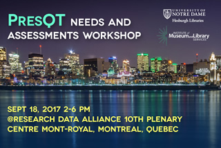

Register Online
Location: Centre Mont-Royal, SALON CARTIER I
RDA 10th Plenary Montreal, Canada
Time: Monday, September 18 2PM-6PM EDT (UTC-4 hours)
Join Remotely on day of event: https://notredame.zoom.us/j/966794870
A free* pre-conference event focused on Preservation Quality Tool development co-located at Research Data Alliance 10th Plenary Meeting in Montreal.
On-site and Virtual attendance registration options are available.
Program
Speaker Bios
Abstracts
PresQT & All Workshop Resources on OSF
PresQT aims to complement existing repository infrastructure and more deeply integrate workflow and software preservation tools with an aim toward data preservation that facilitates scientific reuse and experimental reproducibility. Workshop participants will explore system architecture alternatives, discuss user experience opportunities, and prioritize functional requirements for the proposed tool.
Target Audience: We seek input from domain researchers, data curators, repository managers, librarians, software developers, workflow tool developers, data scientists and editors/publishers.
| Time | Desc | Presenter(s) |
| 2:00 | Welcome PresQT/Workshop Goals Needs Assessment & Overview of PresQT Survey Results |
Sandra Gesing
Rick Johnson Natalie Meyers |
| 2:40 | Needs and Tool Priorities Panel Discussion | |
| 3:00 | Lightning Talks Round 1 | Presenters: |
|
||
| 4:00 | Coffee/Tea Break | |
| 4:20 | Lightning Talks Round 2 | Presenters: |
| 5:00 | Round Table Breakout Choose Between: | Facilitators: |
|
||
| 5:40 | Wrap Up Panel Short Sumnary of Next steps, meetings & outputs for PresQT |
Breakout Leads Moderator: Natalie Meyers |
This Preservation Quality Tool (PresQT) workshop is designed to expand on Workshop One, gather additional stakeholder input, and gauge community interest to inform technical and administrative implementation plans for open source Data and Software Preservation Quality Tools that can be jointly developed by interested parties. There is potential for workshop participants to take the project’s resultant technical and administrative project plans forward and work together to jointly in future to develop the planned tool(s) as funded implementation projects, and/or RDA working group activities.
Depending on your nationality, obtaining a Visa or an Electronic Travel Authorization (eTA) might be necessary in order to travel to Canada and attend the PresQT workshop and the RDA 10th Plenary meeting. More info on visas and Electronic Travel Authorization (eTA) at: RDA 10th Plenary - Visa Information
For information about hotel accommodations, visit the RDA 10th Plenary logistics page . more information email the PresQT Team (This email address is being protected from spambots. You need JavaScript enabled to view it.). For more information on RDA P10 please visit https://www.rd-alliance.org.*There is no PresQT workshop registration fee. The PresQT Workshop II event is free to attend. However, on-site participants may be very interested in attending the collocated plenary mtg and social events which do have fees. Please see RDA web site for plenary registration options.